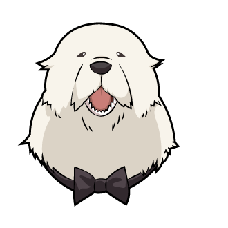
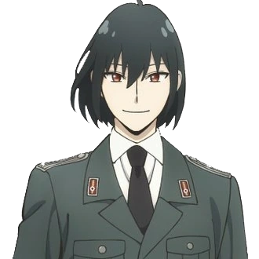
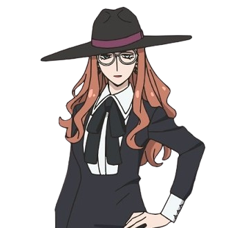

-
Loid Forger
Descrição
Loid Forger é o personagem principal do mangá e anime "Spy x Family", criado por Tatsuya Endo. Ele é um espião de elite conhecido pelo codinome "Twilight". Na história, Loid recebe a missão de se infiltrar em uma escola de prestígio para se aproximar de um alvo específico. Para isso, ele adota a identidade de Loid Forger e forma uma família falsa, que inclui a esposa Yor Forger (uma assassina profissional) e a filha adotiva Anya Forger (uma telepata).
-
Anya Forger
Descrição
Anya Forger é uma das personagens principais do mangá e anime "Spy x Family", criado por Tatsuya Endo. Ela é a filha adotiva de Loid Forger, o protagonista, e Yor Forger. Anya é uma garotinha adorável e espirituosa, com a habilidade única de ler mentes, um poder que ela ganhou através de experimentos científicos realizados em seu passado.
-
Yor Forger
Descrição
Yor Forger é uma das personagens principais do mangá e anime "Spy x Family", criado por Tatsuya Endo. Ela é a esposa de Loid Forger e a mãe adotiva de Anya Forger. Yor tem uma identidade dupla: enquanto leva uma vida aparentemente normal como funcionária pública, ela é secretamente uma assassina profissional conhecida pelo codinome "Princesa Espinho" (ou "Thorn Princess" no original).
-
Bondo Forger
Descrição
Bond Forger é o cão da família Forger no mangá e anime "Spy x Family", criado por Tatsuya Endo. Bond é um cachorro grande e fofo com uma habilidade especial: ele pode prever o futuro. Originalmente parte de um experimento que lhe deu essa habilidade, Bond acabou sendo resgatado pela família Forger.
-
Yuri Briar
Descrição
Yuri Briar é um personagem do mangá e anime "Spy x Family", criado por Tatsuya Endo. Ele é o irmão mais novo de Yor Forger. Yuri trabalha como oficial da Polícia Secreta de Ostania, uma organização encarregada de manter a segurança e a ordem no país, muitas vezes através de métodos rigorosos e espionagem.
-
Sylvia Sherwood
Descrição
Sylvia Sherwood é uma personagem do mangá e anime "Spy x Family", criado por Tatsuya Endo. Ela é a supervisora de Loid Forger (codinome "Twilight") e uma alta funcionária da agência de espionagem Westalis, conhecida como "WISE". Sylvia é uma agente experiente e respeitada, desempenhando um papel crucial na coordenação das operações de espionagem e fornecendo suporte a Loid em suas missões.